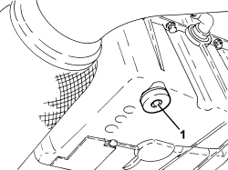

1020A30 ENGINE OIL DRAIN PLUG - REPLACE
- Path
- Procedures > 10 ENGINE > 1020 CRANKCASE SUMP AND COVERS > 1020A CRANKCASE OIL SUMP > 1020A30 ENGINE OIL DRAIN PLUG - REPLACE
- Kind
- repair procedure (removal / refitting; the operation number is the code)
- Applies to
- all engines; all production periods
- Interactive page
- https://sloeber94.github.io/elrnDB-fCrm/en/#/194002134
Applies to: engines: 1.9 JTD 8v, 1.9 JTD 16v; all production periods
- Position the vehicle on a lift.
Op. 7055B54 UNDER ENGINE PROTECTION/GUARD - R.R.
- Unscrew the oil drain plug.
- Tighten the new gearbox oil drain plug to the recommended torque.
Component | Fastening | dia | Value (daNm) | Validity |
|---|---|---|---|---|
Engine oil drain plug | - | M12x1.25 | (oil sump side) 2.0 | 1.9 JTD 8v 1.9 JTD 16v 2.4 JTD 20v |
Op. 0010T11 ENGINE OIL - CHECK LEVEL AND TOP UP, IF NECESSARY
Op. 7055B54 UNDER ENGINE PROTECTION/GUARD - R.R.
- Remove the vehicle from the lift.
Applies to: engines: 2.2; all production periods
- Position the vehicle on a lift.
Op. 7055B54 UNDER ENGINE PROTECTION/GUARD - R.R.
- Unscrew the oil drain plug.
- Tighten the new gearbox oil drain plug to the recommended torque.
Component | Fastening | dia | Value (daNm) | Validity |
|---|---|---|---|---|
Engine oil drain plug | - | M12 x 1.75 | (oil sump side) 2.5 | 2.2 |
Op. 0010T11 ENGINE OIL - CHECK LEVEL AND TOP UP, IF NECESSARY
Op. 7055B54 UNDER ENGINE PROTECTION/GUARD - R.R.
- Remove the vehicle from the lift.
Applies to: engines: 2.4 JTD 20v; all production periods
Applies to: engines: 1.8; all production periods
 Removing
Removing
 Refitting
Refitting- Position the vehicle on a lift.
1. Unscrew the engine oil drain plug.

Applies to: engines: 1.8; all production periods
Refitting
Removing- Tighten the new gearbox oil drain plug to the recommended torque.
Component | Fastening | dia | Value (daNm) | Validity |
|---|---|---|---|---|
Engine oil drain plug | - | - | 1.4 | 1.8 |
Op. 0010T11 ENGINE OIL - CHECK LEVEL AND TOP UP, IF NECESSARY
- Remove the vehicle from the lift.